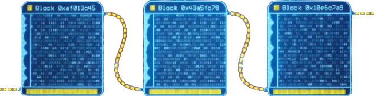

- 1. Connaissances basiques -
(vous pouvez cliquer sur les mots en couleur pour accéder à leurs définitions)*
Tout ce que vous lirez sur ce site concerne les cryptomonnaies et les blockchains décentralisées (comme Bitcoin), et sauf si c'est mentionné, en aucun cas les cryptomonnaies des banques centrales (comme l'euro numérique). Celles-ci sont centralisées et contrôlées par les Etats et les banques, alors que :
Bitcoin a été créé après la crise financière de 2008, proposant un système de paiement et de réserve de valeur alternatif. Une monnaie qui soit mondiale et universelle, dont aucun pays ou gouvernement ne pourrait prendre le contrôle. Une fois que le grand public a commencé à voir les avantages d'un tel système les cryptomonnaies ont doucement commencé leur démocratisation, et en 2022 on compte pas moins de 425 millions d'utilisateurs dans le monde.
Si vous aussi vous voulez faire partie de l'aventure alors ce site va vous permettre de comprendre comment faire.
1.1 C’est quoi une crypto-monnaie ?
C’est un actif numérique hébergé sur une blockchain.
Pour simplifier c’est une monnaie qui, plutôt que d’être émis et géré par une banque centrale comme l’euro ou le dollar, est hébergée et sécurisée sur un réseau qu’on appelle la blockchain.
1.2 C’est quoi la blockchain ?
C’est une technologie permettant de distribuer et de sécuriser une ou plusieurs crypto-monnaies. Pour simplifier c’est un réseau crypté qui permet d'échanger, de transférer et de stocker les crypto-monnaies.
Réponse avancée :
Une blockchain est une liste de blocs de données numériques sans cesse croissante. Ils sont organisés par ordre chronologique et sont liés et sécurisés par des preuves cryptographiques.
La blockchain (chaîne de blocs) agit comme un grand livre numérique décentralisé, distribué et public chargé de conserver un enregistrement permanent de toutes les transactions précédemment confirmées.
Les transactions de la blockchain se produisent au sein d'un réseau peer-to-peer d'ordinateurs (nœuds) distribués à l'échelle mondiale. Chaque nœud conserve une copie de la blockchain et contribue au fonctionnement et à la sécurité du réseau. C'est ce qui fait de Bitcoin une monnaie numérique décentralisée, sans frontières, résistante à la censure et qui ne nécessite pas d'intermédiation tierce.
La technologie de la blockchain peut également être adaptée et mise en œuvre dans d'autres activités, telles que la santé, l’administration, les assurances, les chaînes d'approvisionnement, etc. Bien que cette technologie ait été conçe pour fonctionner comme un registre distribué (sur des systèmes décentralisés), elle peut également être déployée sur des systèmes centralisés afin d'assurer l'intégrité des données ou de réduire les coûts opérationnels.

1.3 Quel est l'intérêt de la blockchain par rapport à une banque ?
La décentralisation :
Plus besoin de passer par une banque avec les désagréments qui l'accompagnent (frais, délais, justification, paperasse, …) vous détenez vous même votre argent et pouvez l’utiliser et le gérer vous même. Vous pouvez transférer la somme que vous voulez quand vous voulez et à qui vous voulez.
La vitesse :
La blockchain est mondiale et fonctionne 24h/24 et 7j/7, la nuit, les dimanches et jours fériés ne posent plus de problèmes. Envoyer ou recevoir de l'argent ne prend que quelques minutes, peu importe le montant ou le pays de destination.
La sécurité :
Quand il est stocké dans votre wallet, vous et vous seul pouvez accéder à votre argent. Ni l’état, ni aucune banque ou institution ne peut y toucher. De plus, les blockchains comme celle de Bitcoin sont bien plus sécurisées que votre carte de crédit ou votre compte bancaire.
La simplicité :
Transférer ses cryptomonnaies se fait en quelques instants depuis son smartphone ou son ordinateur. Il existe même des cartes de crédit Visa permettant de payer partout où Visa est accepté, celles-ci feront la conversion entre vos crypto-monnaies et des euros en fonction du taux de change au moment du paiement.
Exemple pratique : Vous voulez revendre votre voiture à un inconnu : grâce aux crypto-monnaies il peut vous payer instantanément dans la rue pour n'importe quel montant, même un dimanche ou jour férié sans possibilité de frauder avec un chèque en bois, un faux chèque de banque ou de faux billets. Quelques minutes plus tard vous aurez reçu l’argent.
1.4 L’investissement
Comme les actions en bourse, les crypto-monnaies ont une valeur qui fluctue par rapport à l’euro. Depuis sa création le Bitcoin et beaucoup d’autres monnaies ont vu leurs valeurs augmenter dans le temps. Et la grande majorité des détenteurs de crypto-monnaies en Europe les possèdent dans la perspective de faire fructifier leur argent.
Mini cours de fiscalité :
Comme les crypto-monnaies sont encore considérées en France comme des investissements et non comme des monnaies, si vous gagnez de l'argent grâce à elles, l'État vous taxera sur vos plus-values à hauteur de 30% (exactement comme avec des actions en bourse). C’est ce qu’on appelle la flat tax.
Exemple : Si vous achetez 1000€ de bitcoin et que dans 6 mois vous les revendez pour 1500€, vous avez fait 500€ de bénéfice donc vous aurez 150€ d'impôts à payer (= 30% de 500€).
Cependant la flat tax ne s'applique que sur les bénéfices réalisés en euro. Si vous n’avez pas besoin de récupérer vos euros tout de suite, vous pouvez revendre vos cryptomonnaies et faire des bénéfices sans avoir à déclarer de plus values en utilisant les stable coins ! Par exemple, si vous voulez revendre vos Bitcoin quand son prix est haut et attendre pour en racheter quand son prix sera plus bas, plutôt que de revendre vos Bitcoin contre des euros, vous pouvez les échanger contre un stable coin.
1.5 C’est quoi un stable coin ?
Pour faire simple, un stable coin est une crypto-monnaie qui copie le cours d'une monnaie fiat.
Les plus utilisés sont l'USDT et l'USDC, qui copient le cours du Dollar Américain (1USDT = 1$). Il existe aussi des stable coins qui copient la valeur de l’euro ou de l’or par exemple.
Ils servent de réserve de valeurs quand vous voulez garder votre argent sur la blockchain sans vous exposer aux variations du marché.
1.6 Connaissances indispensables

Il existe plusieurs blockchains (Bitcoin, Ethereum, Binance Smart Chain, Polygon, etc...).
Ces blockchains ont toutes un jeton principal qui s'appelle un coin (Bitcoin, Ethereum, BNB et Matic pour les quatre blockchains citées auparavant). Oui, les coins ont souvent le nom de leur blockchain.
Il existe aussi une multitude d'autres crypto-monnaies qu'on appelle des tokens, ceux-ci n'ont pas leur propre blockchain mais sont hébergés sur une déjà existante.
Les tokens peuvent se trouver sur plusieurs blockchains en même temps, mais ne sont pas forcément présents sur toutes.